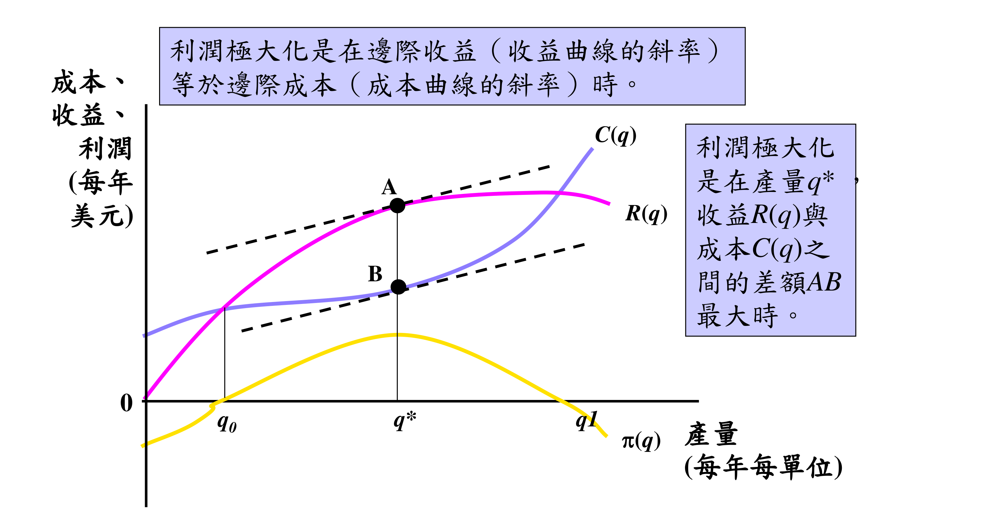
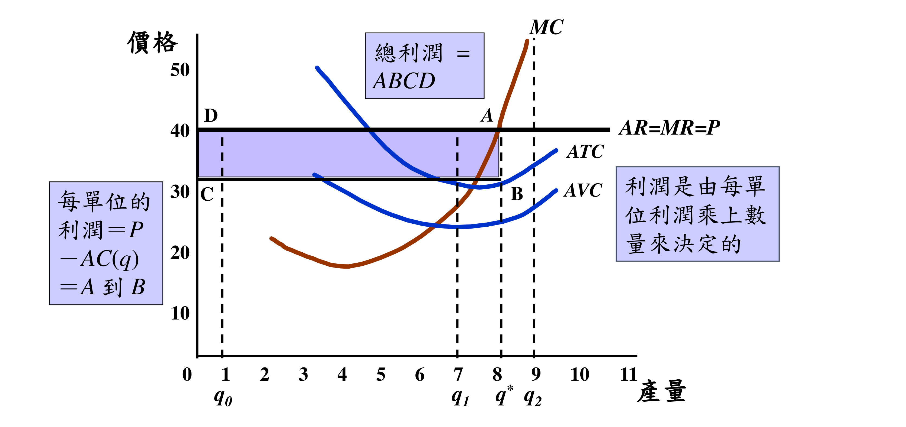
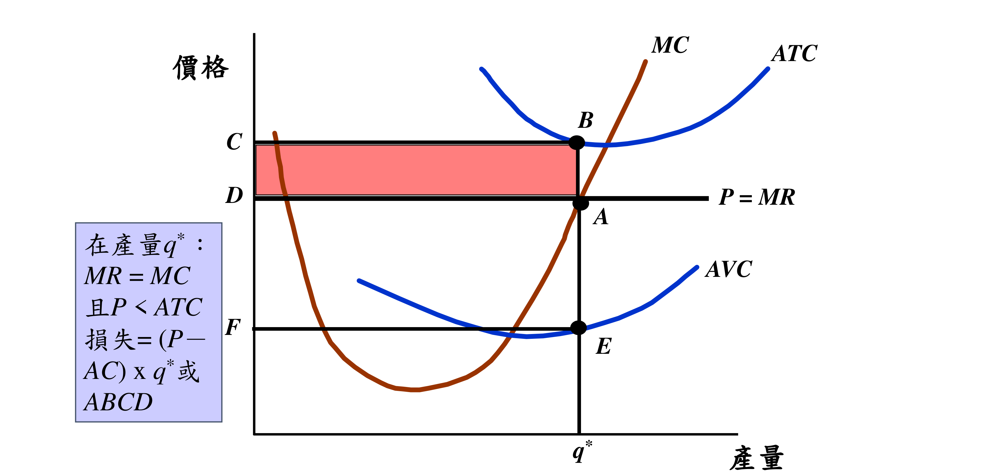

💰 成本類 Cost
Total Cost＝TFC＋TVC
Total Fixed Cost，不隨產量變
Total Variable Cost，隨產量變
＝TC ÷ q（每單位總成本）
＝TFC ÷ q
＝TVC ÷ q
多生產 1 單位增加的成本＝ΔTC/Δq
⏱️ 短期 vs 長期成本
Short-run AC，至少一種投入固定
Short-run MC
Long-run AC，所有投入皆可變；是各 SAC 的下包絡線
Long-run MC
Long-run Total Cost
Minimum Efficient Scale：LAC 達最低的最小產量
📈 收益類 Revenue
Total Revenue＝P × q
＝TR ÷ q ＝ P（價格）
多賣 1 單位增加的收益＝ΔTR/Δq
🔤 其他常見符號
PART 1 · 廠商行為與利潤極大化
廠商怎麼決定生產多少？核心一句話：當「多賺的」等於「多花的」時，利潤最大 —— MR = MC。
成本函數 C(q)
生產 q 單位必須付出的成本。
收益函數 R(q)
賣出 q 單位收進來的錢 = 價格 × 數量。
利潤函數 π(q)
π(q) = R(q) − C(q)，收入扣成本剩下的。
生產函數 q = f(L, K)
代表「投入某組合的勞力 L 與資本 K，最多能生產的產量 q」。是上面三函數的起點。
數學推導
Δπ/Δq = ΔR/Δq − ΔC/Δq = 0
= MR − MC = 0 → MR = MC
讀圖方法：R(q) 與 C(q) 差距最大處

q* 處 R 與 C 的垂直差距 AB（利潤）最大；此時收益曲線斜率＝成本曲線斜率（邊際收益＝邊際成本）。
📖 給初學者：怎麼看這張圖？
橫軸是產量 q（一年生產多少），縱軸是錢。圖上有三條線：
- C(q) 成本：生產越多，總成本越高。
- R(q) 收益：賣越多收進來的錢越多，但增速會放緩。
- π(q) 利潤＝收益 − 成本，就是下方那條「先升後降」的山形曲線。
廠商的目標是讓利潤最大，也就是 R(q) 跟 C(q) 兩條線「垂直差距最大」的地方——就是圖中 A 點到 B 點的距離 AB，發生在產量 q*。
PART 2 · 完全競爭市場
最「理想」的市場：廠商多到沒人能左右價格。每家都是「價格接受者」，長期下利潤會被競爭磨成零。
Price Taker
廠商超多，每家只佔產業一小塊，對市場價格沒有影響力，只能接受既定價格。
Homogeneity
各家產品完全可替代。誰敢漲價就會流失幾乎全部客人。
Free Entry/Exit
有利可圖就進來、虧錢就離開，沒有額外成本。這對「有效競爭」很關鍵。
單一廠商：水平需求 d
不管產出多少，每單位都賣 $4。
產業：向下斜的需求 D
整體市場價格由供需共同決定。
讀圖方法：P > ATC → 有利潤（ABCD 面積）

產量定在 MC=MR（q*）。價格 P 高於 ATC，每單位賺 A→B，乘上數量 = 總利潤 ABCD。
讀圖方法：P < ATC → 損失（ABCD 面積）

產量仍定在 MR=MC（q*）。但 P 低於 ATC，每單位虧 A→B，總損失 = ABCD。只要 P 仍高於 AVC（A 在 E 之上）就先撐著。
P > ATC
收入蓋過全部成本 → 有獲利，繼續生產。
AVC < P < ATC
蓋得住變動成本＋一部分固定成本 → 短期繼續生產（關廠反而虧更多固定成本）。
P < AVC
連變動成本都蓋不住 → 應該關廠，止血。
調整機制（自由進出的力量）
吸引新廠商
價格下跌
廠商離開
價格上升
長期競爭均衡的三條件
① 所有廠商都已達利潤極大（MR=MC）。
② 沒有廠商想進或出 —— 因為大家都賺零經濟利潤。
③ 價格使供給量 = 需求量（市場結清）。
當某項投入是固定/稀有的（例如黃金地段、獨家牌照），擁有它的廠商會賺取經濟租。這解釋了：為什麼有些市場看起來有獲利機會，新廠商卻進不來 —— 因為關鍵投入被綁死了。結果是：少數廠商賺經濟租，但所有廠商的「經濟利潤」仍是零。
PART 3 · 獨占市場
市場上只有「一家」。獨占者能影響價格，但仍受市場需求曲線限制 —— 要賣更多，就得降價。
讀圖方法：MR 永遠在需求(AR)線下方
兩線同起點，MR 斜率約為需求的兩倍陡。
為什麼 MR < P？
= P（新增那單位賣的錢）
− Q·(ΔP/ΔQ)（為了賣它，
全部既有單位被迫降價的損失）
讀圖方法：先在 MR=MC 定產量 Q*，再回到需求線抬到價格 P
數值例（p.46）
推導
→ (P − MC)/P = −1/E_d
→ P = MC / (1 + 1/E_d)
E_d 是該廠商面對的需求彈性（負值）。
需求彈性的意義
彈性 = 需求量變動% ÷ 價格變動%。
例：價格變 1%、需求量變 1.5% → 彈性 1.5。
｜E_d｜> 1 稱「有彈性」（敏感）；｜E_d｜< 1 稱「無彈性」（不敏感）。
讀圖方法：需求愈有彈性，價差 (P−MC) 愈小
Lerner Index
介於 0 與 1：完全競爭 P=MC → L=0；L 越大獨占程度越高。
獨占力的三個來源
① 需求彈性（越無彈性越有力）
② 市場中廠商數目（越少越有力）
③ 廠商間的互動關係（是否勾結競爭）
如何創造獨占？
自然獨占、握有關鍵生產要素、獨特技術/配方、法令保障、特殊時空環境。
實施差別訂價的四個條件
① 面對負斜率的需求曲線（有訂價能力）。
② 能區別不同市場的消費者（誰願付高價、誰只付低價）。
③ 能防止套利（arbitrage）—— 低價買的人不能轉賣給高價市場。
④ 有能力阻止商品在市場間流動。
依「身份」
學生 / 老人 / 會員不同價。
依「數量」
買越多單價越低（量販）。
混合型
依對象＋時間＋數量綜合（如機票）。
PART 4 · 獨占性競爭
介於完全競爭與獨占之間：很多廠商，但賣「有點不一樣」的產品（品牌差異）。短期能賺，長期又回到零利潤。
異質但高度替代
產品有差異（品牌、配方），但彼此可高度替代（交叉彈性大但非無限大）。例：香皂、洗髮精、感冒藥。
自由進出
用自家品牌進入相對容易，虧損就離開。
短期：可能有利潤（P > AC）
長期：新品牌湧入 → 利潤=0（D 與 AC 相切）
PART 5 · 寡占與賽局理論
市場由「少數幾家」主導。每家做決策時都要猜對手會怎麼反應 —— 這就需要賽局理論與 Nash 均衡。
Nash 均衡（核心觀念，整個 PART 5 都用到）
每個廠商在已知競爭對手的行為下，都已做出對自己最好的選擇 —— 沒有人想單方面改變策略。這是一個「不合作」的均衡。
讀圖方法：兩條反應曲線的交點＝Cournot 均衡
三種結果的優劣（對廠商而言）
問題是：勾結最好，但每家都有偷偷增產的誘因 → 見囚犯困境。
先行動者的優勢
一家廠商先設定產出。先宣布會造成「既成事實」：我的產量很大，對手只能視為已知、被迫設定較小產出。→ 先行動有策略上的優勢。
選「價格」競爭（同質產品）
廠商改為選價格而非數量。同質產品下，Nash 均衡是兩家都把價格殺到 P = MC，雙方賺零利潤。
異質產品的價格競爭（更貼近現實）
真實寡占多有產品差異，市占還取決於設計、性能、耐久度。因此廠商選價格競爭很自然。兩家的反應曲線交點即價格的 Nash 均衡（例：均衡價 $4、各賺 $12）。
囚犯困境報酬矩陣（數字=刑期，越小越好）
| B 承認 | B 不承認 | |
|---|---|---|
| A 承認 | −5, −5 | −1, −10 |
| A 不承認 | −10, −1 | −2, −2 |
Nash 均衡＝（承認, 承認）=（−5,−5）紅格；但雙方若能守口（−2,−2）綠格更好 → 困境所在。
🔖 真實版：P&G vs 聯合利華/花王 訂價（利潤 千元/月）
| 對手收 $1.40 | 對手收 $1.50 | |
|---|---|---|
| P&G 收 $1.40 | $12, $12 | $29, $11 |
| P&G 收 $1.50 | $3, $21 | $20, $20 |
都定低價（$1.40）是 Nash 均衡，各賺 $12；但都定高價可各賺 $20 —— 卻互不信任而做不到。
不用對話也能默契調價
私下勾結的最大障礙是「無法溝通該訂多少」。解法：一家廠商經常性宣布調價（價格訊號），其他廠商跟隨 → 這家就是「價格領導者」，其餘是跟隨者。
優勢廠商模型 Dominant Firm
大廠的需求 D_D = 市場需求 D − 小廠供給。大廠在 MR_D=MC 定產量、設 P*；小廠視 P* 為已知生產。
OPEC 石油卡特爾（需求無彈性 → 獨占力大）
CIPEC 銅卡特爾（需求有彈性 → 獨占力小）
總需求與競爭供給都有彈性 → CIPEC 獨占力小，P* 接近競爭價格 P_C。
🧮 公式計算機
點藍色符號可跳到對應輸入框；填好數字會即時顯示計算過程。每個欄位上方都有白話說明。